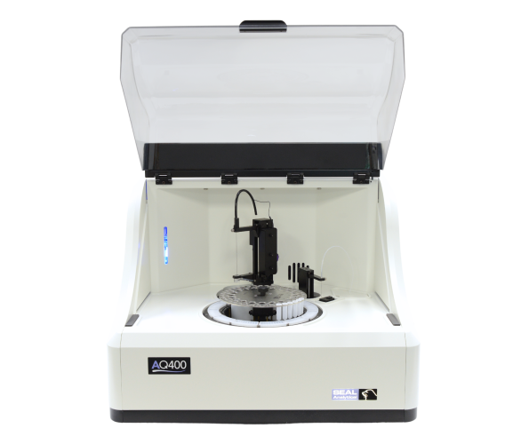

SEAL Analytical AQ400

| Seal Analytical AQ400 | |
|---|---|
| Location: | Lab. 2.39 Building 8 |
| Manager: | Rodrigo Borges |
| Operator: | Rodrigo Borges |
| Analytical Principle: | Spectrophotometry |
| Manufacturer: | SEAL Analytical |
| Model: | AQ400 |
| Type: | Discrete Analyzer |
| Nutrients: | NH₄⁺, NO₃⁻, NO₂⁻, PO₄³⁻ and SiO₂ |
| Website: | Seal Analytical |
The SEAL AQ400 is an automated benchtop discrete analyzer designed for environmental and analytical chemistry laboratories. The instrument automates colorimetric assays, enabling the rapid and accurate determination of a wide range of chemical parameters in liquid samples (e.g., water, wastewater, plant extracts, and other environmental matrices). It operates on the principle of discrete analysis, where each chemical reaction takes place independently in a dedicated reaction well, eliminating the risk of cross-contamination between samples and ensuring high reproducibility of analytical results.
The AQ400 operates using a robotic arm equipped with a high-precision syringe that aspirates and dispenses exact volumes of samples and reagents into individual reaction wells. After mixing, the reaction mixtures are incubated at a controlled temperature for a programmed period to allow complete development of the colorimetric reaction. An aliquot of the reaction mixture is then transferred to a 10 mm quartz cuvette, where absorbance is measured by spectrophotometry. Following each measurement, the cuvette is automatically washed, preventing carry-over and ensuring consistent, reliable analytical results.
The AQ400 accommodates approximately 60 sample positions, 26 reagent positions, and 216 reaction wells, making it suitable for laboratories with medium to high sample throughput. The high precision of the robotic handling system, combined with the use of a stationary quartz cuvette, enables low detection limits and excellent reproducibility of analytical results.
Implemented Methods:
| Fresh Water | ||
|---|---|---|
| Method | Range | Source |
| Ammonia-N (NH₄⁺) | 14.27 to 714.04 μM | EPA-153-C Rev 0 |
| Nitrate (NO₃⁻) | 17.86 to 1071.0 μM | EPA-114-C Rev 1A |
| Nitrite (NO₂⁻) | 1.07 to 107.1 μM | EPA-115-C Rev 1A |
| Orto-Phosphate (PO₄³⁻) | 4.04 to 403.61 μM | EPA-146-A Rev 0 |
| Silica (SiO₂) | 1.66 to 166.4 μM | EPA-122-C Rev 9 |
| Seawater | ||
| Method | Range | Source |
| Ammonia-N (NH₄⁺) | 1.4 to 71 μM | SEA-548-C |
| Nitrate (NO₃⁻) | 0.71 to 71.4 μM | SEA-527-C Rev 0 |
| Nitrite (NO₂⁻) | 0.07 to 14.0 μM | SEA-516-C Rev 0 |
| Orto-Phosphate (PO₄³⁻) | 0.1 to 7.0 μM | SEA-156-C Rev 1 |
| Silica (SiO₂) | 1.66 to 166.4 μM | SEA-122-C Rev 1 |
Possible Future Methods:
Cloride
Hexavalent Chromium
Cianide
Total Kjeldahl Nitrogen
Total Phosphorus
Total Kjeldahl Phosphorus
Alkalinity
Color
Total Hardness
Phenolics
Sulfate
Alumminum
Calcium
Citrate
Chlorine
Glucose
Iron (II)
Total Iron
Magnesium
Molybdenum
Sulfide
Main Applications:
- Fresh water, seawater and wastewater nutrient analysis;
- Water quality environmental monitoring;
- Monitoring of marine and coastal waters;
- Eutrophication studies;
- Monitoring the wastewater treatment process;
- Drinking water assessment;
- Analysis of groundwater and surface water;
- Aquaculture water monitoring;
- Analysis of soil and sediment extracts;
- Agricultural and fertilizer analyses;
- Routine environmental analyses;
Sample types:
- Fresh Water;
- Seawater;
- Estuary Waters;
- Wastewater;
- Groundwater;
- Surface Waters;
- Soil Extracts;
- Sediment Extracts;
- Plant Extracts;
- Environmental Samples;
- Aquaculture Waters;
Main Advantages:
- High degree of automation, allowing continuous operation and even unsupervised operation during the night.;
- Ability to analyze multiple parameters in different samples in a single analytical sequence;
- Low reagent consumption (typically between 20 and 400 µL per assay), reducing costs and waste production.;
- Automatic dilution of samples outside the calibration range.;
- Automatic sample white balance correction to minimize color interference.;
- Compatibility with LIMS systems for laboratory data management and traceability.
Technical Specifications:
| Specification | Value |
|---|---|
| Manufacturer | SEAL Analytical |
| Model | AQ400 Discrete Analyzer |
| Software | AQ Software |
| Analytical Principle | Discrete colorimetric analysis (UV-Vis spectrophotometry) |
| Sample Capacity | Up to 60 positions |
| Reagent Volume | 20-400 μL per assay |
| Measuring Cuvette | Quartz, 10 mm optical path |
| Mixing System | Robotic arm with high-precision syringe. |
| Temperature Control | Programmable reaction heating and reagent cooling. |
| Automatic Dilution | Yes (pre-analysis and post-analysis for samples outside the range) |